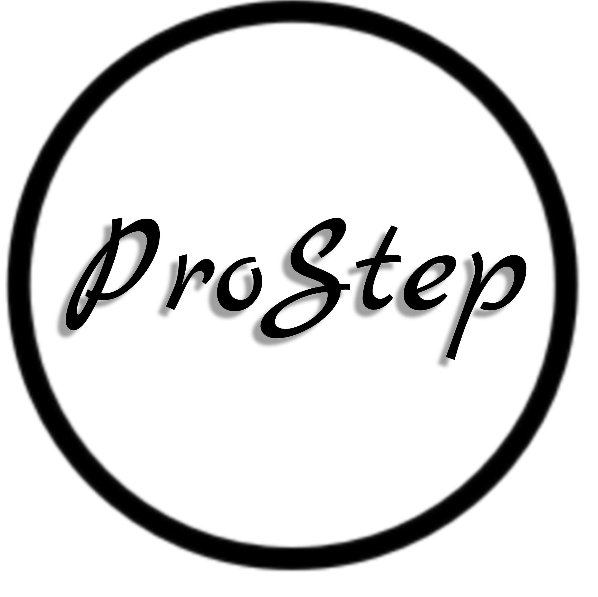

Инструменты для системного администрирования, мониторинга и автоматизации.
| Проект | Описание | Ссылка |
|---|---|---|
| tmux-ps | Автосохранение и восстановление сессий tmux + SSH | Перейти ➡️ |
| SFTP Transfer Manager | Автоматизация синхронизации данных через SFTP | В разработке ⏳ |
Email: support@prostep.com.ua
Site: prostep.com.ua